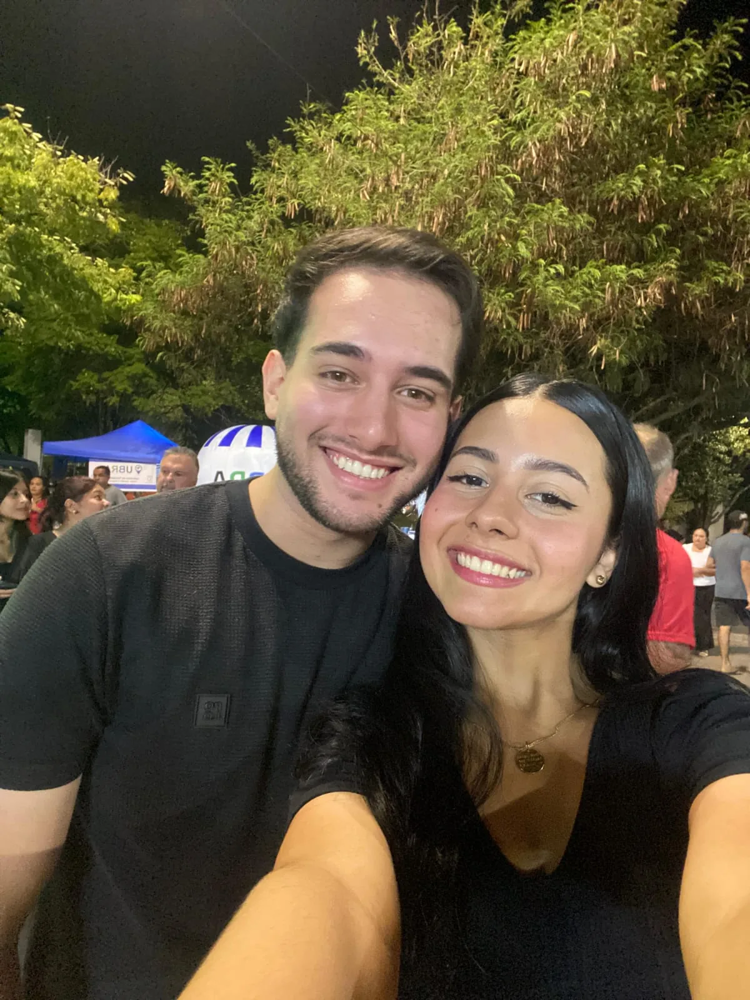

A vergonha da viagem
Eu lembro da vergonha que eu tinha de chegar para falar contigo. Mas também lembro das risadas, das brincadeiras e de como tudo começou a fluir de um jeito leve.
Nosso primeiro Dia dos Namorados
Para a mulher que me ensinou o quão bom é amar.
O tempo passa rápido quando Deus escreve uma história bonita
E eu escolheria você de novo em cada um deles, vida.
“O cordão de três dobras não se quebra tão depressa.”
Eclesiastes 4:12Nossa história
Eu lembro da vergonha que eu tinha de chegar para falar contigo. Mas também lembro das risadas, das brincadeiras e de como tudo começou a fluir de um jeito leve.
Nem sempre fomos namorados. Um dia fomos amigos, colegas, companheiros de risada. A confiança cresceu, a amizade virou paixão, e a paixão virou amor.
Nosso relacionamento nasceu com uma base forte: o desejo de servir a Deus. Mesmo quando não é fácil, eu creio que Ele está nos moldando para algo maior.
A viagem, o quadro que pintamos, a massinha, os lanches no Torradão e no espetinho, os filmes, a praia e tantas lembranças que eu vou levar para toda a vida.
Contigo eu mudei. Aprendi a cuidar melhor de mim, de ti, da nossa história. Você me motiva a crescer e me ajuda a ser um homem melhor.
Nem sempre foi fácil e nem sempre será, mas nós vamos nos escolher dia após dia. Eu, você e Deus, caminhando juntos.
Nossas fotos
Um pedacinho nosso

Essa é uma das muitas lembranças que eu guardo com carinho, vida.
Sobre você
O que eu desejo para nós
Eu sonho com o nosso futuro: nossa casa, nossas coisas, talvez um cachorro, talvez filhos. Só Deus sabe. Mas se for contigo, eu tenho certeza de uma coisa: vou amar cada segundo.
Nos dias fáceis e nos dias difíceis. Nas risadas e nos ajustes. No começo, no meio e em tudo que Deus ainda vai construir em nós.
Carta para minha vida
Amor, no nosso primeiro Dia dos Namorados, eu queria te entregar algo que ficasse guardado não só em uma tela, mas também no teu coração.
Esse tempo contigo passou muito rápido, mas marcou minha vida de um jeito que eu nunca tinha vivido. Eu lembro da vergonha da viagem, das risadas, das conversas, dos momentos simples e dos dias que se tornaram inesquecíveis só porque você estava comigo.
Nosso relacionamento começou com uma base que eu valorizo muito: o propósito de servir a Deus. Eu sei que nem sempre é fácil, mas creio que Ele está nos moldando para que a gente cresça, amadureça e viva algo bonito diante dEle.
Você mudou minha vida, amor. Eu aprendi a cuidar melhor de mim, aprendi a cuidar melhor de você, aprendi a olhar para o futuro com mais responsabilidade. Você me motiva a crescer. Você me inspira a ser melhor. E eu sou muito grato a Deus por tua vida.
Tu é sábia, meiga, fofa, querida, respeitosa, incrível e linda. Mas, além de tudo isso, tu tem um coração imenso. Um coração que me alcança, me ensina, me acalma e me aproxima do que eu quero ser.
Eu amo nossas lembranças: a viagem, o quadro que pintamos, a massinha que modelamos, os lanches, os filmes, a praia, as fotos, as brincadeiras e todos os detalhes que parecem pequenos, mas que para mim são gigantes.
Nem sempre fomos namorados. Um dia fomos amigos, colegas, e tudo foi acontecendo. A amizade virou confiança, a confiança virou paixão, e a paixão virou esse amor que hoje eu tenho tanto orgulho de sentir.
Vida, meu desejo para os próximos meses e anos é simples: é nós. Eu, você e Deus, caminhando juntos. Que a gente se ame mais, se respeite mais, se entenda mais e cresça mais. Que nosso amor também alcance outras vidas pelo poder do evangelho.
Você é meu lírio do vale, minha rosa, meu bem mais precioso. Eu te amo muito, muito mesmo. E se for contigo, eu tenho certeza: vou amar cada segundo dessa vida.
Com todo o meu amor,
Pedro
“O amor tudo sofre, tudo crê, tudo espera, tudo suporta.”
1 Coríntios 13:7